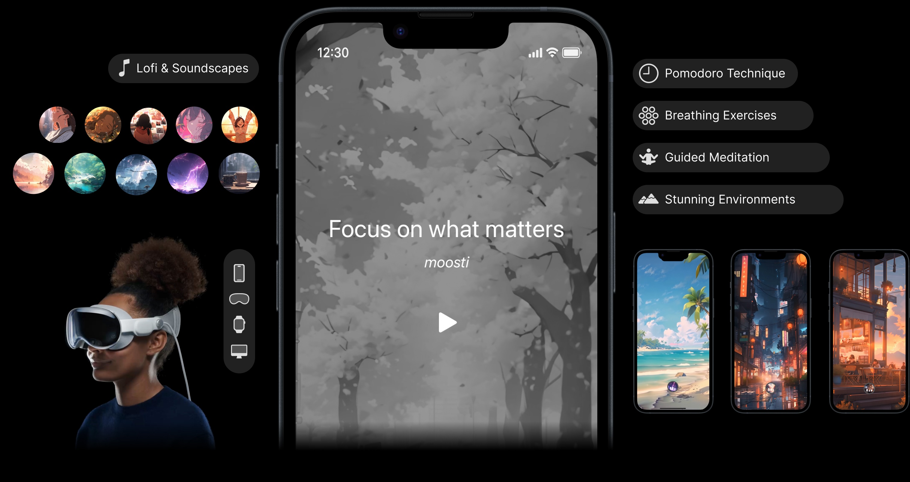

Moosti: Focus, Breathe, Meditate

Moosti is more than just a productivity app, it's your personal companion on the journey to a more focused, balanced, and fulfilling life. With a versatile range of features available on iOS, macOS, Apple Watch, Vision Pro and Web, Moosti empowers you to:
- Take control of your time: Using the Pomodoro Technique to break down tasks into manageable chunks and stay focused.
- Conquer distractions: Minimize interruptions and maximize productivity with simple and intuitive interface.
- Boost accountability: Stay motivated and on track with features like progress tracking and reminders.
- Improve your focus: Enhance your concentration and mental clarity with Lofi beats, soundscapes, and mindfulness sessions.
Why choose Moosti?
- Versatility: Available on multiple devices for a seamless experience.
- Effectiveness: Proven productivity techniques and mindfulness practices.
- Ease of use: Intuitive interface and user-friendly design.
Technical Highlights
Moosti is a sophisticated productivity and well-being app built on a robust technical foundation. Key technical aspects of the solution include:
- Cross-Platform Development: Leveraging modern Apple technologies like SwiftUI, the app offers a unified user experience across iOS, macOS, Apple Watch, and Vision Pro, ensuring seamless functionality and consistent design elements across all compatible devices.
- AI-Generated Mindfulness and Meditation: The mindfulness and meditation sessions within Moosti were created using artificial intelligence, offering a diverse and rich range of content for users.
By leveraging these technologies and addressing technical challenges, Moosti has become a trusted productivity and well-being solution for millions of users worldwide.
With over 1 million users across 180+ countries, Moosti has proven its reliability, efficiency, and ability to enhance the lives of users seeking to improve their focus, reduce stress, and achieve their goals.

Let’s talk about how we can bring your project to life! Whether you have a question or are ready to get started, we're here to help.
Get in touch: email